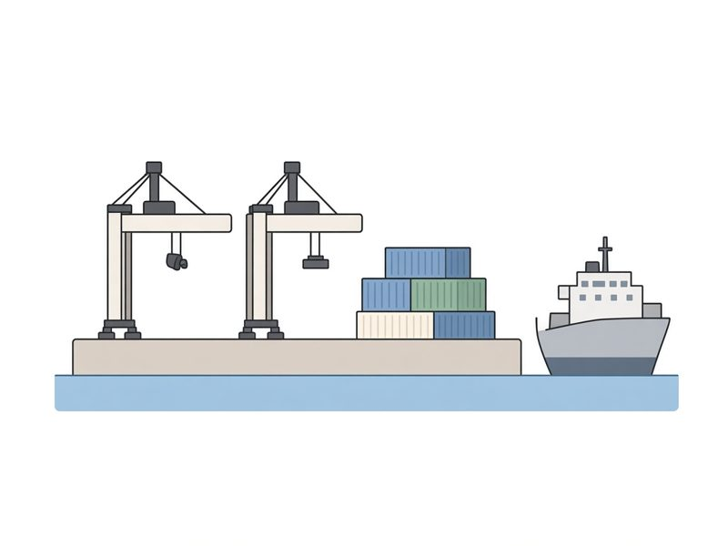

點揭模式：空白處點一下就顯示該格答案，再點可藏起。適合投影提問。Click mode: tap a blank to reveal that answer; tap again to hide it. Useful when projecting questions.
畫筆已開：可在筆記任何位置書寫。關閉畫筆後才可捲動、放大、點揭或開連結。筆跡會跟住文字，放大縮小都不會走位。寫完請按「分享」，在 iPad 選郵件寄出。Pen is on: write anywhere on the notes. Turn the pen off to scroll, pinch-zoom, tap blanks, or open links. Ink stays glued to the text when you zoom. When finished, tap Share and choose Mail on iPad.
HTMS 經濟科課堂筆記 | 編輯：Mr. Sam Wong | 重要聲明：本課堂筆記僅供已購買課本之學生使用，並僅限內部參考。HTMS Economics Lesson Notes | Editor: Mr. Sam Wong
Important: These lesson notes are intended only for students who have purchased the textbook and are for internal use only.
對齊新版 UPEP《活用經濟學 1》第 4 章（4.1–4.5）。第 3 章已教生產是把投入轉為產出。本章專教四類投入、它們的回報，以及勞力供應、勞工生產力和支薪方法。 Aligned with UPEP Economics in Action 1 Chapter 4 (sections 4.1–4.5). Chapter 3 already treats production as turning inputs into output. This chapter is the four inputs, their returns, and labour supply, labour productivity and wage payment methods.
讀完本章，應能：
After this chapter you should be able to:
生產要素（或投入）是可用於生產的資源。
Factors of production (or inputs) are resources used for production.
| 生產要素Factor | 回報（生產要素收入）Return (factor income) |
|---|---|
| 勞力Labour | 工資Wages |
| 企業家職能Entrepreneurship | 利潤Profit |
| 資本Capital | 利息Interest |
| 土地Land | 租金Rent |
利潤 = 總收入 − 總成本。利潤可以是正數，也可以是負數。
Profit = total revenue − total cost. Profit can be positive or negative.
勞力是勞工在生產過程中所付出的人力，包括智力和體力。
Labour is the human effort provided by a worker in production, including both mental and physical effort.
勞力的回報稱為工資，這是對勞工提供人力的補償或報酬。
The return on labour is called wages. They are the compensation or reward for workers’ efforts.
勞力是人力，勞工是提供人力的人。廚師設計菜單是智力，烹調食物是體力，兩者都是勞力。如果廚師同時是餐廳的東主，他仍然提供勞力，另外再提供企業家職能。
Labour is the effort. A worker is the person who provides it. A chef’s menu design is mental effort and the cooking is physical effort. Both are labour. If the chef also owns the restaurant, the chef still provides labour, and also provides entrepreneurship.
勞力供應是指在某段時間內，勞工在生產時所提供的勞力數量。它是以工作時數（或工時）量度，而不是以勞工人數來量度。
Labour supply is the amount of labour provided by workers involved in production during a certain period. It is measured in terms of working hours (or man-hours) instead of the number of workers.
總工作時數 ≠ 總勞工人數
Total number of working hours ≠ Total number of workers
甲國每日的勞力供應（課本 p.4）：25,000 名勞工 × 每人每日 8 小時 = 200,000 工時。答案要連單位。
Country A’s labour supply per day (Textbook p. 4): 25,000 workers × 8 hours each = 200,000 working hours. Keep the unit in the answer.
小測試 4.1Quiz 4.1
課本 p.4Textbook p. 4（a）計算以下國家的勞力供應。
(a) Calculate the labour supply of the following countries.
| 勞工人數Number of workers | 每日平均工時Average hours per day | 勞力供應Labour supply | |
|---|---|---|---|
| 甲國Country A | 10,000 | 8 | 80,000 工時 working hours |
| 乙國Country B | 20,000 | 8 | 160,000 工時 working hours |
| 丙國Country C | 20,000 | 10 | 200,000 工時 working hours |
（b）哪個國家的勞力供應最高？
(b) Which country has the highest labour supply?
答案：丙國。乙國和丙國人數相同，丙國每人多工作 2 小時，總工時較高。
Answer: Country C. B and C have the same number of workers. Each worker in C works 2 more hours, so total hours are higher.
當出現以下情況時，勞力供應會增加：勞工人數增加；或勞工的平均工作時數延長。
Labour supply increases when the number of workers increases; or the average working hours increase.
勞工人數 ↑Number of workers ↑
平均工時 ↑Average hours ↑
職位空缺不改變這條公式的兩個部分。空缺是對勞力的需求。平均工資以較快速度上升，則會吸引更多人進入勞動市場，也會促使在職的人工作更長時間，所以勞工人數、平均工時和勞力供應都上升。
Job vacancies do not change either part of this formula. Vacancies are the demand for labour. A faster rise in the average wage rate attracts more people into the labour market and motivates people already at work to work longer hours, so the number of workers, average hours and labour supply all rise.
請茶的工時：店內有小明、小新兩人，每人每日工作 8 小時，當日勞力供應是 16 工時。小麗加開星期日半天（4 小時），平均工時上升，勞力供應上升。小美去讀全日制課程、暫不返店，勞工人數下降，勞力供應下降。
Hours at Try Tea: Bob and Sam each work 8 hours a day, so that day’s labour supply is 16 working hours. If Eslyn opens an extra Sunday half-day (4 hours), average hours rise and labour supply rises. If Karen leaves for a full-time course and does not come back to the shop, the number of workers falls and labour supply falls.
小測試 4.2Quiz 4.2
課本 p.5Textbook p. 5下列事件如何影響香港的勞力供應？以 ↑ 表示增加、↓ 表示減少、○ 表示不受影響。
How do the following events affect Hong Kong’s labour supply? Put ↑ for increase, ↓ for decrease, or ○ for not affected.
| 勞工人數Number of workers | 平均工時Average hours | 勞力供應Labour supply | |
|---|---|---|---|
| （a）更多學生大學畢業後繼續進修(a) More students study further after graduating from university | ↓ | ○ | ↓ |
| （b）更多公司在辦公時間為員工提供培訓(b) More companies train staff during office hours | ○ | ↓ | ↓ |
| （c）在職父親可多放兩日侍產假(c) Working fathers get two extra days of paternity leave | ○ | ↓ | ↓ |
| （d）市場上有更多職位空缺(d) More job vacancies are available | ○ | ○ | ○ |
| （e）香港平均工資以較快速度上升(e) The average wage rate rises at a faster rate | ↑ | ↑ | ↑ |
（a）進修的人未加入工作，人數下降。（b）人仍受僱，但辦公時間裡有部分時數用於培訓而不是生產，工時下降。（c）只減少放假那幾日的工時。（d）空缺是勞力需求，人數和工時都不受影響。（e）較高工資吸引更多人進入勞動市場，也促使在職的人工作更長時間，人數和工時都上升。
(a) People who stay in education have not joined work, so the number of workers falls. (b) They are still employed, but some office hours are spent on training rather than production, so working hours fall. (c) Only the hours on those extra leave days fall. (d) Vacancies are the demand for labour, so neither the number of workers nor working hours changes. (e) A higher wage rate attracts more people into the labour market and motivates people already at work to work longer hours, so both the number of workers and working hours rise.
一間廠的勞工人數由 40 人增至 50 人，每人每日工時由 8 小時減至 6 小時。當日勞力供應上升了嗎？
A factory’s workers rise from 40 to 50, while hours per worker fall from 8 to 6 a day. Has that day’s labour supply risen?
答案：下降。原先 40 × 8 = 320 工時，其後 50 × 6 = 300 工時。人數上升不足以抵銷工時下降。
Answer: it fell. It was 40 × 8 = 320 working hours, then 50 × 6 = 300 working hours. The rise in headcount does not offset the fall in hours.
對一個經濟體系而言，除了勞力供應的規模外，勞工的質素也十分重要。這可透過勞工生產力來衡量。
In addition to the size of the labour supply, the quality of workers is also important to an economy. This can be measured by labour productivity.
勞工生產力量度每單位工時的產量。
Labour productivity is measured by output per working hour.
勞工生產力亦稱為平均勞工生產力。
Labour productivity is also called average labour productivity.
勞工生產力並非以每名勞工的產量來量度的。總工作時數就是勞力供應。總產量和總工時要用同一段時間。單位是「產量／工時」。
Labour productivity is NOT measured by output per worker. Total working hours are the labour supply. Use the same period for output and hours. The unit is output per working hour.
汽水公司（課本 p.6）：10 名工人，每日工作 8 小時，一星期生產 84,000 瓶。每星期工時 = 10 × 8 × 7 = 560。勞工生產力 = 84,000 ÷ 560 = 150 瓶／工時。
Soft-drink company (Textbook p. 6): 10 workers, 8 hours a day, 84,000 bottles a week. Hours per week = 10 × 8 × 7 = 560. Labour productivity = 84,000 ÷ 560 = 150 bottles per working hour.
小測試 4.3Quiz 4.3
課本 p.6Textbook p. 6計算兩年的勞工生產力，並判斷上升還是下降。
Calculate labour productivity for both years and decide whether it increased or decreased.
| 第 1 年Year 1 | 第 2 年Year 2 | |
|---|---|---|
| 聘用勞工人數Number of workers | 310 | 300 |
| 每日平均工時Average hours per day | 5 | 6 |
| 每日總產量（單位）Total output per day (units) | 8,525 | 9,720 |
答案：第 1 年 310 × 5 = 1,550 工時，8,525 ÷ 1,550 = 5.5 單位／工時。第 2 年 300 × 6 = 1,800 工時，9,720 ÷ 1,800 = 5.4 單位／工時。勞工生產力下降。每日總產量上升，但工時升得更多。
Answer: Year 1 is 310 × 5 = 1,550 hours, so 8,525 ÷ 1,550 = 5.5 units per working hour. Year 2 is 300 × 6 = 1,800 hours, so 9,720 ÷ 1,800 = 5.4 units per working hour. Labour productivity fell. Daily output rose, but hours rose by more.
酒店廚房的通風、溫度和衛生通常好過路邊廚房，同一名廚師在酒店廚房的每工時產量可以較高。
A hotel kitchen usually has better ventilation, temperature and hygiene than a street kitchen, so the same chef can produce more per working hour in the hotel kitchen.
生活實例 4.1 香港法定假日Living Case 4.1 Statutory holidays in Hong Kong
課本 p.8Textbook p. 8法定假日由 2022 年起分階段由 12 日增至 17 日：2022 年佛誕；2024 年聖誕節後第一個平日；2026 年復活節星期一；2028 年耶穌受難節；2030 年耶穌受難節翌日。
Statutory holidays rise in stages from 12 to 17 days from 2022: the Birthday of the Buddha in 2022; the first weekday after Christmas Day in 2024; Easter Monday in 2026; Good Friday in 2028; the day following Good Friday in 2030.
答案：勞工人數不受影響，每名勞工的平均工時下降，所以香港的勞力供應下降。假期有助改善勞工的身心健康，使他們工作更快、每工時產量更多，勞工生產力很可能上升。
Answer: the number of workers is not affected, average working hours per worker fall, so Hong Kong’s labour supply falls. Holidays can improve workers’ physical and mental health, so they work faster and produce more output per working hour. Labour productivity is likely to rise.
小測試 4.4Quiz 4.4
課本 p.8Textbook p. 8下列事件如何影響勞力供應和勞工生產力？
How do the following events affect labour supply and labour productivity?
（a）政府為低技術勞工提供全日制職業訓練
(a) The government provides full-time vocational training for low-skilled workers
答案：勞力供應 ↓（他們離開工作去受訓）。受訓後技能較高，勞工生產力 ↑。
Answer: labour supply ↓ (they leave work to train). After training their skills are higher, so labour productivity ↑.
（b）很多勞工感染流感，部分人放病假
(b) Many workers have been infected with the flu and some are on sick leave
答案：勞力供應 ↓。健康變差，勞工生產力 ↓。
Answer: labour supply ↓. Health is worse, so labour productivity ↓.
（c）政府降低失業救濟金的金額
(c) The government reduces the amount of unemployment benefits
答案：更多人願意工作，勞力供應 ↑。新加入的勞工質素未知，勞工生產力不確定。
Answer: more people are willing to work, so labour supply ↑. The quality of the extra workers is unknown, so labour productivity is uncertain.
（d）政府把每週最高工時由 48 小時降至 45 小時
(d) The government lowers the maximum working hours from 48 hours to 45 hours per week
答案：平均工時下降，勞力供應 ↓。休息可能改善健康，但題目沒有說明產量如何變，勞工生產力不確定。
Answer: average hours fall, so labour supply ↓. Rest may improve health, but the question does not say how output changes, so labour productivity is uncertain.
應試攻略 4.1：輸入勞工如何影響勞工生產力
Exam Tips 4.1: how imported workers affect labour productivity
輸入勞工增加勞工人數，所以勞力供應上升。對勞工生產力的影響不確定，要再看輸入勞工的質素。
Imported workers raise the number of workers, so labour supply rises. The effect on labour productivity is uncertain until the quality of the imported workers is known.
勞工生產力 = 總產量 ÷ 勞力供應。若輸入勞工的平均生產力高於現有勞工，總產量的增加百分比會大於勞力供應的增加百分比，整體勞工生產力上升。例子包括香港的高端人才通行證計劃（高才通計劃）和新加坡的就業准證。
相反，輸入低技術勞工，整體勞工生產力便可能下降。
Labour productivity = total output ÷ labour supply. If the imported workers’ average productivity is higher than that of existing workers, the percentage rise in total output is larger than the percentage rise in labour supply, so overall labour productivity rises. Examples include Hong Kong’s Top Talent Pass Scheme and Singapore’s Employment Pass.
Importing low-skilled workers can lower overall labour productivity.
公開試題 HKDSE 2023，卷一，題 6Public Exam HKDSE 2023 Paper 1 Q6
課本 p.9Textbook p. 9下列哪項會同時提高某經濟的勞力供應和平均勞工生產力？
A. 政府提高失業救濟金的金額。
B. 免費教育延伸至大學課程。
C. 更多廠商安裝先進的生產設備。
D. 一項為高技術人才而設的入境計劃的配額增加。
Which of the following would raise both the labour supply and the average labour productivity of an economy?
A. The government raises the amount of unemployment benefits.
B. Free education is extended to university programmes.
C. More firms install advanced production equipment.
D. The quota of an immigration scheme for highly skilled talent is increased.
答案：D
Answer: D
D 增加高技術勞工，人數上升所以勞力供應上升；他們的平均生產力高於現有勞工，所以平均勞工生產力也上升。A 使部分人較不願意工作，勞力供應下降。B 使更多人留在校園，現時勞力供應下降。C 可提高勞工生產力，但沒有增加勞工人數或工時。
D adds highly skilled workers, so the number of workers and labour supply rise; their average productivity is higher than that of existing workers, so average labour productivity also rises. A makes some people less willing to work, so labour supply falls. B keeps more people in education, so current labour supply falls. C can raise labour productivity, but it does not raise the number of workers or working hours.
例題拆解 4.1 勞工生產力出現差別的原因Guided Example 4.1 Reasons for the difference in labour productivity
課本 p.10Textbook p. 10| 甲工廠Factory A | 乙工廠Factory B | |
|---|---|---|
| 勞工人數Number of workers | 100 | 120 |
| 總工作時數Total working hours | 840 | 600 |
| 總產量（單位）Total output (units) | 15,000 | 12,000 |
參閱上表。下列哪項是甲、乙兩廠勞工生產力出現差別的一個可能原因？
A. 甲工廠的環境比乙工廠好。
B. 甲工廠聘用較多勞力服務。
C. 乙工廠使用的資本物品比甲工廠少。
D. 乙工廠的專門化程度比甲工廠高。
Refer to the above table. Which of the following is a possible reason for the difference between the labour productivity of Factory A and Factory B?
A. Factory A has a better environment than Factory B.
B. Factory A employs more labour service.
C. Factory B uses fewer capital goods than Factory A.
D. Factory B practises a higher degree of specialisation than Factory A.
答案：D。題目已給總工時，不用再乘人數。甲工廠 = 15,000 ÷ 840 ≈ 17.9 單位／工時。乙工廠 = 12,000 ÷ 600 = 20 單位／工時，乙工廠較高。D 令乙工廠的生產力較高，符合計算。A 和 C 都會令甲工廠較高，與計算相反。B 不是解釋勞工生產力差別的原因。
Answer: D. The question already gives total working hours, so do not calculate them again. Factory A = 15,000 ÷ 840 ≈ 17.9 units per working hour. Factory B = 12,000 ÷ 600 = 20 units per working hour, so Factory B is higher. D raises Factory B’s productivity, which matches the calculation. A and C would make Factory A higher, the opposite of the calculation. B is not a reason for a difference in labour productivity.
請茶星期一產量 240 杯，小明和小新共工作 16 工時。星期二產量 180 杯，只得小明工作 8 工時。哪一日的勞工生產力較高？
On Monday Try Tea makes 240 cups in 16 working hours of Bob and Sam together. On Tuesday it makes 180 cups in Bob’s 8 working hours. Which day has higher labour productivity?
答案：星期二。星期一 240 ÷ 16 = 15 杯／工時。星期二 180 ÷ 8 = 22.5 杯／工時。產量較低的那一日，每工時產量可以較高。
Answer: Tuesday. Monday is 240 ÷ 16 = 15 cups per working hour. Tuesday is 180 ÷ 8 = 22.5 cups per working hour. The day with lower total output can still have higher output per hour.
勞工的職業流動性是指勞工由一種職業轉換到另一種職業的意願和容易程度。
Occupational mobility of labour refers to the willingness and ease of labour to change from one occupation to another.
這是指轉換職業，即轉為從事另一個職業，而不是轉換到同一職業的其他工作。
Changing occupations ≠ Changing jobs within the same occupation.
勞工的地域流動性是指勞工由一個工作地區轉移到另外一個工作地區的意願和容易程度。
Geographical mobility of labour refers to the willingness and ease of labour to change from one work location to another.
交通改善會提高地域流動性。
Better transport raises geographical mobility.
醫生轉換職業的可能性較侍應低，因為他所放棄的收入較高。
Compared to a waiter, a doctor is less likely to change his occupation because of the higher income foregone.
| 因素Factor | 職業流動性Occupational mobility |
|---|---|
| 現職的金錢或非金錢回報較高Higher money or non-money rewards in the present occupation | 下降。金錢回報包括工資、福利和津貼；非金錢回報包括滿足感、地位、晉升和工作環境。Falls. Money rewards include wages, benefits and allowances. Non-money rewards include satisfaction, status, promotion and working conditions. |
| 其他職業的回報較高Higher rewards in other occupations | 上升Rises |
| 技能較專門、訓練期較長More specialised skills and longer training | 下降。香港醫生是例子。Falls. Hong Kong doctors are an example. |
| 入行限制，例如牌照Entry restrictions, such as a licence | 下降。香港建築師須通過香港建築師學會和建築師註冊管理局的專業評核。Falls. A Hong Kong architect must pass a professional assessment by the Hong Kong Institute of Architects and the Architects Registration Board. |
| 再培訓計劃Retraining programmes | 上升。取得新技能的成本下降。Rises. The cost of gaining new skills falls. |
| 職業資訊較易取得，例如 JobsDBEasier market information, such as JobsDB | 上升Rises |
公開試題 HKDSE 2016，卷一，題 9Public Exam HKDSE 2016 Paper 1 Q9
課本 p.13Textbook p. 13下列哪類勞工的職業流動性最高？
A. 職業籃球運動員
B. 持牌水喉匠
C. 律師行的見習畢業生
D. 會計師行的文員
Which of the following workers has the highest occupational mobility?
A. a professional basketball player
B. a licensed plumber
C. a graduate trainee in a law firm
D. a clerk in an accounting firm
答案：D
Answer: D
文員的技能較一般，入行限制較少，轉職業時放棄的專門訓練較少。職業籃球運動員的技能很專門，放棄的收入也高。持牌水喉匠有牌照這道入行限制。律師行見習畢業生已走上專門的法律訓練。
A clerk’s skills are more general, entry restrictions are fewer, and less specialised training is given up. A professional basketball player’s skills are highly specific and the income given up is high. A licensed plumber faces a licence as an entry restriction. A graduate trainee in a law firm is already on a specialised legal-training path.
小測試 4.5Quiz 4.5
課本 p.15Textbook p. 15（a）專業團體在會員福利上有較強的議價能力
(a) Professional associations have stronger bargaining power over the welfare of their members
答案：現職的非金錢回報上升，職業流動性 ↓。地域流動性 ○。
Answer: non-money rewards in the present occupation rise, so occupational mobility ↓. Geographical mobility is unchanged.
（b）新建公路後，勞工的平均交通時間下降
(b) Average travel time of workers falls after the construction of a new highway
答案：職業流動性 ○。交通成本下降，地域流動性 ↑。
Answer: occupational mobility is unchanged. Transport cost falls, so geographical mobility ↑.
（c）網上招聘平台提高使用服務的收費
(c) Online recruitment platforms raise the charge for using their services
答案：職業和地區的職位資訊都變貴，職業流動性 ↓，地域流動性 ↓。
Answer: information about jobs in other occupations and other places becomes more costly, so both occupational mobility ↓ and geographical mobility ↓.
請茶的兩個決定：小新由調茶轉做會計文員，是職業流動。小美仍是調茶，但由銅鑼灣店調到沙田店，是地域流動，不是職業流動。
Two decisions at Try Tea: Sam leaves tea-making for a job as an accounts clerk. That is occupational mobility. Karen stays a tea-maker but moves from the Causeway Bay shop to the Sha Tin shop. That is geographical mobility, not occupational mobility.
假設你在暑假期間獲聘為一名外賣員。你可以從以下兩份合約中二擇其一：
Suppose you are hired as a food delivery worker during the summer holidays. You can choose from the following two contracts:
合約甲
時間：11:00 am – 8:00 pm
薪金：每小時 50 元
Contract A
Time: 11:00 am – 8:00 pm
Salary: $50 per hour
合約乙
時間：11:00 am – 8:00 pm
薪金：每張單 20 元
Contract B
Time: 11:00 am – 8:00 pm
Salary: $20 per order
Q1 哪份合約會讓你更勤奮工作？為甚麼？
Q2 你會選擇哪份合約？為甚麼？
Q1 Under which contract would you work harder? Why?
Q2 Which contract would you choose? Why?
從上方的「想一想」活動中，我們可以知道，每種支薪方法對僱主和勞工而言，各有利弊。在本節，我們將討論以下常用的支薪方法。
From the above Think Ahead, we found that each payment method has its pros and cons for both employers and workers. In this section, we will discuss the following common wage payment methods.
計件工資是指按勞工的產量計算工資。計件工資又稱「以件計薪」或「件工」。
Under a piece rate, workers are paid according to their amount of output.
計件工資常用於產出標準化的行業，因為這些行業的僱主較容易量度勞工的貢獻及監察產出的質素。
Piece rates are commonly used in industries where output is standardised, because it is easy to measure workers’ contribution and monitor output quality.
例子：送遞員按送遞訂單的數量計算工資，薪金每張訂單 35 元。翻譯員按翻譯的字數計算工資，薪金每字 1.5 元。
Examples: a rider is paid according to the number of orders delivered, at $35 per order. A translator is paid according to the number of words translated, at $1.5 per word.
計件工資對僱主和僱員／勞工的優點和缺點：
Advantages and disadvantages of a piece rate to employers and employees/workers:
| 優點Advantages | 缺點Disadvantages | |
|---|---|---|
| 對僱主而言To employers |
|
|
| 對勞工而言To workers |
|
|
計時工資是指按勞工的工時計算工資。計時工資又稱「以時計薪」或「時薪」。
Under a time rate, workers are paid according to the amount of time they work.
工時可以按時、日、月或年計算。在以下情況下，僱主會採用計時工資，而不採用計件工資：
Time rate can refer to hourly, daily, monthly or even yearly pay. A time rate is used rather than a piece rate when:
例子：教師一般是按月計薪，薪金每月 40,000 元。家務助理一般是按時計薪，薪金每小時 160 元。
Examples: teachers are usually paid on a monthly basis, at $40,000 per month. Domestic helpers are usually paid on an hourly basis, at $160 per hour.
勞工從計件工資所得的收入，是否必然比計時工資高？
Must workers earn higher wages from a piece rate than a time rate?
答案：不一定。要看勞工的生產力、勤奮程度和所訂的計件工資。
Answer: not necessarily. It depends on the workers’ productivity, how hard they work, and the piece rate offered.
計時工資對僱主和僱員／勞工的優點和缺點：
Advantages and disadvantages of a time rate to employers and employees/workers:
| 優點Advantages | 缺點Disadvantages | |
|---|---|---|
| 對僱主而言To employers |
|
|
| 對勞工而言To workers |
|
|
在利潤分享制下，廠商會把部分利潤發放給勞工作為工資。花紅是利潤分享制的例子。利潤越高，花紅越多。
Under a profit-sharing scheme, a portion of the firm’s profit is distributed to workers as a wage payment. A bonus is one example of a profit-sharing scheme. Workers may receive a higher bonus if the firm has higher profits.
佣金是指廠商把部分銷售收益發放給勞工作為工資。
Commissions are a portion of the firm’s sales revenue distributed to workers as a wage payment.
假設某電訊公司的銷售代表可按其賺取的銷售收益收取 20% 佣金。如果他為公司賺取了 8 萬元的銷售收益，他的佣金便是 16,000 元（= 8 萬元 × 20%）。佣金是較常用於銷售人員的支薪方法。
Suppose a sales representative of a telecommunication company receives 20% of the sales revenue he generates as a commission. If he achieves sales revenue of $80,000, his commission will be $16,000 (= $80,000 × 20%). Commissions are commonly used as a wage payment method for salespeople.
利潤分享制或佣金對僱主和僱員／勞工的優點和缺點：
Advantages and disadvantages of a profit-sharing scheme or commissions to employers and employees/workers:
| 優點Advantages | 缺點Disadvantages | |
|---|---|---|
| 對僱主而言To employers |
|
|
| 對勞工而言To workers |
|
|
透過利潤分享制／佣金，廠商可激勵勞工更勤奮工作，從而增加利潤／銷售收益。那些按勞工對廠商利潤／銷售收益的貢獻來量度工作表現的職業，較常採用這兩種計薪方法。
Profit-sharing schemes / commissions are adopted to motivate workers to work harder to increase the firms’ profit / sales revenue. They are commonly used in occupations where workers’ performance is measured by their contribution to the firms’ profit/sales revenue.
僱主為了招聘和留住勞工，除了採用利潤分享制／佣金外，通常也會向勞工支付基本薪金，從而使他們的收入更穩定。
In order to recruit and retain workers, employers usually need to provide a more stable income by combining a profit-sharing scheme / commission with a basic salary.
公開試題 HKDSE 2012，卷一，題 7Public Exam HKDSE 2012 Paper 1 Q7
課本 p.20Textbook p. 20一些物業經紀行以基本薪金加佣金支付員工的薪金，因為
(1) 這可提高員工的工作意欲。
(2) 這可將部分經營風險轉移給員工。
(3) 計算工資的成本較低。
A. 只有 (1)、(2)
B. 只有 (1)、(3)
C. 只有 (2)、(3)
D. (1)、(2) 及 (3)
Some property agencies pay their employees a basic salary plus commission because
(1) it can increase the working incentive of the employees.
(2) it can transfer part of the business risk to the employees.
(3) the cost of calculating wages is lower.
A. (1) and (2) only
B. (1) and (3) only
C. (2) and (3) only
D. (1), (2) and (3)
答案：A
Answer: A
(3) 不成立。佣金涉及收益的計算，計算工資的成本比計時工資高。
(3) is not correct. Commission involves calculating revenue, so the cost of calculating wage payments is higher than a time rate.
生活實例 4.2 湯告魯斯憑《壯志凌雲：獨行俠》賺取 2 億美元Living Case 4.2 Tom Cruise earned US$200 million from filming Top Gun: Maverick
課本 p.20Textbook p. 20湯告魯斯是電影《壯志凌雲：獨行俠》的主角和監製。除了賺取 1,300 萬美元的片酬外，他還可收取 12% 的電影票房收益。截至 2022 年底，該電影的全球總票房為 14.8 億美元，這意味著湯告魯斯可賺取約 1.8 億美元的票房收益。
Tom Cruise is the main actor and producer of the movie Top Gun: Maverick. In addition to a remuneration of US$13 million, he also received 12% of the movie’s box office revenue. By the end of 2022, the movie had accumulated a worldwide box office total of US$1.48 billion, which means that Tom Cruise’s income increased by an additional US$180 million.
這種安排對電影公司有甚麼好處？
What are the advantages of this arrangement to the movie company?
電影公司可以把部分業務風險轉嫁演員。如票房收益低，給予演員的工資成本也會降低。此外，演員也會更有動力改善表現，以及積極參與宣傳活動。
The movie company can transfer some business risks to the actor. When the box office revenue is low, wage costs to the actor will be lowered. Also, the actor has a higher incentive to perform better and participate in promotional activities.
這種安排對湯告魯斯有甚麼好處？
What is the advantage of this arrangement to Tom Cruise?
湯告魯斯有可能獲得較高收入。只要電影票房收益增加，他的收入就會增加。
Tom Cruise has the possibility of receiving a higher income. He can earn more if the movie has a higher box office revenue.
小費是顧客給予為其提供服務的勞工的金錢獎勵。小費又稱賞錢。
Tips are a gift of money paid by customers to reward workers who provide services.
小費常用於直接向顧客提供服務的勞工。一般而言，勞工的服務越好，所得的小費越多。
Tips are commonly used among workers who provide direct services to customers. Usually, higher tips are a reward for better service.
導遊和侍應通常會以小費作為其收入的一部分。
Tour guides and waiters/waitresses usually earn tips as a part of their income.
小費對僱主和僱員／勞工的優點和缺點：
Advantages and disadvantages of tips to employers and employees/workers:
| 優點Advantages | 缺點Disadvantages | |
|---|---|---|
| 對僱主而言To employers |
|
|
| 對勞工而言To workers |
|
|
僱主為了招聘和留住勞工，除了以小費支薪外，通常也會向勞工支付基本薪金，從而使他們得到更穩定的收入。
In order to recruit and retain workers, employers usually need to provide a more stable income by combining tips with a basic salary.
下表總結不同支薪方法的優點和缺點：
The following table summarises the advantages and disadvantages of different wage payment methods:
| 計件工資Piece rate | 計時工資Time rate | 利潤分享制／佣金Profit-sharing scheme / Commission | 小費Tips | ||
|---|---|---|---|---|---|
| 對僱主而言To employers | 勞工的工作意欲和生產力Incentive to work and labour productivity | 較高Higher | 較低Lower | 較高Higher | 較高Higher |
| 計算工資的成本Cost of calculating wage payments | 較高Higher | 較低Lower | 較高Higher | 較高Higher | |
| 監察勞工工作表現的成本Cost of monitoring workers’ performance | 較低Lower | 較高Higher | 較低Lower | 較低Lower | |
| 監察產出質素的成本Cost of monitoring output quality | 較高Higher | 較低Lower | 較低Lower | 較低Lower | |
| 招聘和留住勞工Recruit and retain workers | 較難More difficult | 較易Easier | 較難More difficult | 較難More difficult | |
| 把業務風險轉嫁勞工Transferring business risks to workers | 可能Possible | / | 可能Possible | / | |
| 對勞工而言To workers | 通過更好的表現賺取更高收入Earning higher income by better performance | 可能Possible | 不可能Impossible | 可能Possible | 可能Possible |
| 收入的穩定性Income stability | 不穩定Unstable | 穩定Stable | 不穩定Unstable | 不穩定Unstable | |
小測試 4.6Quiz 4.6
課本 p.22Textbook p. 22（a）如僱主採用計時工資，而非計件工資，支付給僱員的工資會較低。
(a) An employer pays lower wages to his employees when using a time rate instead of a piece rate.
答案：錯誤。不一定。要看勞工的生產力、勤奮程度和所訂的計件工資。
Answer: False. Not necessarily. It depends on the workers’ productivity, how hard they work, and the piece rate offered.
（b）由於消防員的工作性質並不標準化，所以他們通常按時計薪。
(b) Firefighters are usually paid by a time rate because the nature of their work is not standardised.
答案：正確。
Answer: True.
（c）由於計時工資讓勞工有穩定的收入，所以能增加勞工生產力。
(c) Adopting a time rate can increase labour productivity as workers have a stable income.
答案：錯誤。計時工資的誘因較低。收入穩定不是勞工生產力上升的原因。
Answer: False. The incentive under time rate is lower. Stable income is not a reason for higher labour productivity.
（d）一些零售店以基本薪金加佣金來支付店員的薪金，以轉移部分業務風險。
(d) Some retail shops pay their shopkeepers a basic salary plus commissions in order to transfer certain business risks.
答案：正確。銷售收益下降時，佣金那一部分下降。
Answer: True. When sales revenue falls, the commission part falls.
小測試 4.7Quiz 4.7
課本 p.22Textbook p. 22為以下職業選擇合適的支薪方法。
Match the following occupations with an appropriate wage payment method.
| 計件工資Piece rate | 計時工資Time rate | 佣金Commission | 計時工資 + 小費Time rate + Tips | |
|---|---|---|---|---|
| （a）護士(a) A nurse | ✓ | |||
| （b）保險經紀(b) An insurance agent | ✓ | |||
| （c）報紙專欄作家(c) A newspaper columnist | ✓ | |||
| （d）酒店行李搬運員(d) A hotel porter | ✓ |
例題拆解 4.2 支薪方法的優點和缺點Guided Example 4.2 Advantages and disadvantages of wage payment methods
課本 p.23Textbook p. 23以下是某銀行招聘出納員的廣告：
The following is a job advertisement for a bank teller:
銀行出納員
工作時間：上午 8:00 – 下午 5:30
薪金：每月 $18,500 + 按表現發放花紅
Bank teller
Working hours: 8:00 am to 5:30 pm
Salary: $18,500 per month + Performance-related bonus
（a）列出兩個原因，解釋為何銀行不只向出納員支付月薪。
（b）從僱員的角度，解釋上述支薪方法的一個優點和一個缺點。
(a) Give TWO reasons to explain why the bank does not pay the teller solely by a monthly salary.
(b) From the viewpoint of employees, explain ONE advantage and ONE disadvantage of the above wage payment method.
解題思路
Thinking process
1. 識別題目所提到的支薪方法。
計時工資 + 利潤分享制
1. Identify the wage payment methods mentioned in the question.
Time rate + Profit-sharing scheme
2. 分析題目的要求。
2. Analyse what the requirements of the question are.
| （a）部分Part (a) | （b）部分Part (b) | |
|---|---|---|
| 題目是從僱主還是僱員的角度出發？Does it ask the viewpoint of the employer or the employee? | 僱主（銀行）Employer (The bank) | 僱員（出納員）Employee (The teller) |
| 題目問及優點還是缺點？Does it ask for the advantage(s) or disadvantage(s)? | 優點Advantages | 優點和缺點Advantage and disadvantage |
| 是否須要與其他支薪方法作比較？Does it require to be compared with another wage payment method? | 須要（計時工資）Yes (Time rate) | 不須要No |
如果題目要求考生比較兩種支薪方法，學生不應以兩者的共同優點和缺點作為答案。
If a comparison is required, common advantages and disadvantages of both payment methods cannot be the answer.
（a）原因：
(a) Reasons:
（b）優點：如果銀行的利潤增加，出納員便可以賺取較高收入。
(b) Advantage: The teller can earn a higher income if the bank earns a higher profit.
缺點：由於銀行的利潤是不確定的，出納員的收入並不穩定。
Disadvantage: As the profit of the bank is uncertain, the teller’s income is unstable.
（或其他合理的答案。）須清楚說明論點屬於「優點」還是「缺點」。
(Or other reasonable answers.) You should clearly state whether your point is an ‘advantage’ or a ‘disadvantage’.
請茶的四種支薪：小明按月薪調茶，是計時。小新外送按每單計，是計件。小美推銷茶聚，按成交金額抽成，是佣金。堂食客人給小新的額外金錢，是小費。小麗不能說「計件一定比月薪高」，要先知道單量和時薪。
Four payments at Try Tea: Bob’s monthly pay for making tea is a time rate. Sam’s pay per delivery is a piece rate. Karen’s share of party-booking revenue is commission. Extra money from dine-in customers to Sam is a tip. Eslyn cannot say piece rate must beat the monthly salary until the number of orders and the time rate are known.
互動教具：哪一句才是該支薪方法的分別Lab: which line is actually the difference
企業家職能是企業家付出的人力，包括承擔業務風險和作出生產決策。企業家職能的回報稱為利潤。
Entrepreneurship is the human effort provided by an entrepreneur in bearing business risks and making production decisions. The return on entrepreneurship is called profits.
企業家是企業的東主，可以是獨資經營者、合夥人或股東。兩項角色：
An entrepreneur is an owner of the firm: a sole proprietor, a partner or a shareholder. The two roles are:
回報不確定，可以是正數或負數。
The return is uncertain. It can be positive or negative.
決定資金來源、生產甚麼、如何生產，以及如何在市場上分銷。亦管理和監督其他生產要素。
Deciding the source of funds, what to produce, how to produce, and how to distribute the product. Also managing and supervising the other factors.
企業家不一定參與管理。小股東只承擔風險，仍然提供企業家職能。受僱的經理沒有所有權，只提供勞力，不是企業家。公司的行政總裁若只是受僱人員，就不是企業家。
An entrepreneur need not take part in management. A minor shareholder only bears risk and still provides entrepreneurship. An employed manager who does not own the firm provides labour only, and is not an entrepreneur. A chief executive who is only an employee is not an entrepreneur.
伊隆・馬斯克是多間科技公司的東主。一名自僱小販也提供企業家職能：兩者都承擔業務風險，並作出生產決策。
Elon Musk owns several technology companies. A self-employed hawker also provides entrepreneurship. Both bear business risk and make production decisions.
小測試 4.8Quiz 4.8
課本 p.24Textbook p. 24（a）在所有生產要素中，企業家職能的回報是最高的。
(a) Among all factors of production, the return on entrepreneurship is the highest.
答案：錯誤。利潤可以是負數，沒有「必定最高」。
Answer: False. Profit can be negative. It is not necessarily the highest return.
（b）一個人可以同時為企業提供勞力和企業家職能。
(b) One person can provide both labour and entrepreneurship to a firm.
答案：正確。東主若同時親手工作，兩種要素都提供。
Answer: True. An owner who also works with their own hands provides both factors.
（c）一家公司的行政總裁必然是一名企業家。
(c) The chief executive of a company must be an entrepreneur.
答案：錯誤。受僱而沒有所有權的行政總裁只提供勞力。
Answer: False. An employed chief executive with no ownership provides labour only.
請茶的東主：小麗決定菜單、承擔虧蝕，提供企業家職能，回報是利潤。她若同時落場調茶，那一部分是勞力，回報是工資。請茶聘來的店長沒有股份，只提供勞力。
The owner of Try Tea: Eslyn chooses the menu and bears the losses, so she provides entrepreneurship and the return is profit. If she also makes the tea herself, that part is labour and the return is wages. A shop manager hired by Try Tea, with no ownership, provides labour only.
資本是指用於生產的人造資源，包括經過人力加工的天然資源。資本的回報稱為利息。「資本」與上一章提及的「生產者物品」和「資本物品」意思相同。
Capital is a man-made resource used in production. It includes natural resources that are processed by human effort. The return on capital is called interest. The terms ‘producer goods’ and ‘capital goods’ introduced in the previous chapter have the same meaning as capital.
杜拜的棕櫚島是人工島，興建涉及人力，屬資本而不是土地。
Dubai’s Palm Islands are artificial islands. Building them involves human effort, so they are capital, not land.
使用資本可以提高其他生產要素的生產力。資本的成本較低時，廠商可以用資本取代其他生產要素。餐廳用機械人協助招待，同一工時可以服務更多顧客，勞工生產力上升。
Using capital can raise the productivity of the other factors. When capital is cheaper, a firm can replace other factors with capital. Restaurant robots help waiters serve more customers in the same working time, so labour productivity rises.
小測試 4.9Quiz 4.9
課本 p.25Textbook p. 25下列哪項是一個主題樂園的資本？
Which of the following is capital of a theme park?
（a）過山車的操作人員
(a) roller-coaster operators
答案：不是。他們提供勞力。
Answer: No. They provide labour.
（b）表演者的服裝
(b) performers’ costumes
答案：是。人造，並用於生產表演。
Answer: Yes. They are man-made and used to produce the shows.
（c）免費派發予顧客的雪糕
(c) ice cream given free to customers
答案：是。樂園買來用於招待顧客，是生產遊樂服務時使用的人造資源。
Answer: Yes. The park buys it to serve customers. It is a man-made resource used in producing the park’s service.
（d）用於回答顧客查詢的智能聊天機械人
(d) a smart chatbot that answers customers’ enquiries
答案：是。軟件是人造資源。
Answer: Yes. Software is a man-made resource.
（e）在餐廳用來製作食物的海魚
(e) sea fish used in the restaurant to make food
答案：是。原材料是資本。海裡未經捕撈的魚才是土地。
Answer: Yes. Raw materials are capital. Fish still in the sea, before any human effort, are land.
資本存量是指生產單位所擁有的資本數量，其增減視乎資本形成和資本折舊的數量而定。
Capital stock refers to the amount of capital held by a production unit. It may increase or decrease depending on the amount of capital formation and capital depreciation.
亦稱投資。是購入或生產資本。商業大廈落成是資本形成。
Also called investment. It is the purchase or production of capital. Completing a commercial building is capital formation.
資本被消耗、棄置、損耗或變得過時。電腦因使用而失去價值是折舊。維持現有資本存量的開支亦算在內，細節在第 19 章。
Capital is used up, disposed of, worn out or becomes obsolete. Computers losing value through use is depreciation. Spending to maintain the existing stock is included. The detail is in Chapter 19.
當資本形成大於資本折舊時，資本存量會增加，這稱為資本累積。資本累積涉及為了未來的消費而放棄現時的消費：當更多資源用於增加資本存量（即資本累積）時，可供現時消費的消費品會減少。資本累積可提高生產力，並增加未來可供消費的消費品。
When capital formation is greater than capital depreciation, capital stock will increase. This is known as capital accumulation. Capital accumulation involves forgoing present consumption for future consumption. When more resources are used for increasing capital stock (i.e., capital accumulation), fewer consumer goods will be available for present consumption. Capital accumulation raises productivity and increases consumer goods available in the future.
請茶的雪櫃：小麗買一台新雪櫃，是資本形成。舊雪櫃因使用而殘舊，是資本折舊。若新雪櫃的價值大於舊雪櫃失去的價值，請茶的資本存量上升。
Try Tea’s fridge: Eslyn buys a new fridge. That is capital formation. The old fridge wears out through use. That is capital depreciation. If the new fridge is worth more than the value the old one loses, Try Tea’s capital stock rises.
土地是指用於生產的天然資源。在經濟學中，土地是大自然所賦予的，不涉及人力加工。土地的回報稱為租金。
Land is a natural resource used in production. In economics, land is a gift of nature and cannot be created by human effort. The return on land is called rent.
土地的形成毋須運用其他資源。但土地有其他用途，使用土地仍然涉及成本。
Creating land does not use other resources. Land has alternative uses, so using land still has a cost.
天然資源一旦經過人力加工，就變成資本，不再是土地。人工島是資本。
Once a natural resource is processed by human effort, it becomes capital and is no longer land. An artificial island is capital.
土地的供應不是固定的。天然力量可以改變它：森林生長、颱風或旱災使動物死亡、火山形成新的陸地。菲律賓有火山島。不能靠人力增加，不等於數量永不改變。
The supply of land is not fixed. Natural forces can change it: forests grow, typhoons or droughts kill animals, and volcanoes form new land. The Philippines has volcanic islands. “Human effort cannot increase it” does not mean the quantity never changes.
| 土地Land | 資本Capital | |
|---|---|---|
| 來源Source | 天然Natural | 人造Man-made |
| 形成成本Cost of creation | 沒有None | 有Yes |
| 能否靠人力增加供應Can human effort increase the supply? | 不能No | 能Yes |
小測試 4.10Quiz 4.10
課本 p.28Textbook p. 28下列哪項是土地？
Which of the following is land?
（a）農地上的雨水
(a) rainfall on farmland
答案：是。天然資源，未經人力加工。
Answer: Yes. A natural resource, not processed by human effort.
（b）海洋公園內的大熊貓
(b) a giant panda at Ocean Park
答案：不是。牠被飼養和看管，已涉及人力，不是野外的天然資源。
Answer: No. It is kept and cared for by people, so human effort is already involved. It is not a natural resource in the wild.
（c）濕地公園內的野生雀鳥
(c) wild birds in a wetland park
答案：是。野生，未經人力飼養。
Answer: Yes. They are wild and are not reared by human effort.
（d）從河中抽取出來的水
(d) water pumped out of a river
答案：不是。抽取涉及人力。河裡未經抽取的水才是土地；抽出來之後是資本。
Answer: No. Pumping is human effort. Water still in the river is land. Once it is pumped out, it is capital.
小測試 4.11Quiz 4.11
課本 p.28Textbook p. 28（a）土地供應是固定的，因為不能靠人力增加。
(a) The supply of land is fixed because human effort cannot increase it.
答案：錯誤。天然力量仍可改變供應。
Answer: False. Natural forces can still change the supply.
（b）土地的形成沒有成本，所以土地必定是免費物品。
(b) Land must be a free good because it costs nothing to create.
答案：錯誤。使用土地有其他用途，所以有機會成本。形成沒有成本，不等於使用沒有成本。
Answer: False. Using land has alternative uses, so it has an opportunity cost. No cost of creation does not mean no cost of use.
（c）土地是大自然的恩賜，所以沒有擁有者。
(c) Land is a gift of nature, so it has no owner.
答案：錯誤。土地可以有擁有者，擁有者收取租金。
Answer: False. Land can have an owner, and the owner receives rent.
應試攻略 4.2：一個人可以擔任多於一個角色
Exam Tips 4.2: one person can perform more than one role
同一人可以提供多於一種生產要素，並賺取多於一種生產要素收入。詹森先生擁有冬天被雪覆蓋的天然山坡，作為土地擁有者收取租金。他開設滑雪場，作為東主提供企業家職能，收取利潤。滑雪設施和裝備是資本，收取利息。他有時教顧客滑雪，提供勞力，收取工資。
One person can supply more than one factor and earn more than one kind of factor income. Mr Johnson owns a natural hillside covered by snow in winter. As the landowner he receives rent. He opens a ski resort. As the owner he provides entrepreneurship and receives profit. The skiing facilities and gear are capital, and he receives interest. He sometimes teaches customers to ski. That is labour, and he receives wages.
公開試題 HKDSE 2020，卷一，題 6Public Exam HKDSE 2020 Paper 1 Q6
課本 p.29Textbook p. 29李地主：「我擁有一個風景優美的湖。曲船長，我可以如何從它賺取收入？」
曲船長：「我有一艘漁船！我可以在湖上擔任一些船程的船長！」
李地主：「讓我們舉辦釣魚團，向遊客收取高昂費用。我會按日給你工資，曲船長。餘下的收入由我收取。」
已知土地的回報是租金，勞力的回報是工資，資本的回報是利息，企業家的回報是利潤。曲船長賺取的收入包含 ____，而李地主賺取的餘下收入包含 ____。
A. 工資 …… 利潤
B. 利息 …… 租金和利潤
C. 工資和利息 …… 租金
D. 工資和利息 …… 租金和利潤
Landlord Li: “I own a lake with great natural views. How can I earn income from it, Captain Cook?”
Captain Cook: “I have a fishing boat! I can be the captain of some boat trips on the lake!”
Landlord Li: “Let’s organise fishing tours and charge the tourists a large sum. I will pay you a daily rate, Captain Cook. And I will pocket the remaining income.”
Given that the return on land is rent, the return on labour is wages, the return on capital is interest and the return on entrepreneurship is profit, the income earned by Captain Cook consists of ____ while the remaining income earned by Landlord Li consists of ____.
A. wage …… profit
B. interest …… rent and profit
C. wage and interest …… rent
D. wage and interest …… rent and profit
答案：D
Answer: D
曲船長親自駕船，提供勞力，收取工資；漁船是他的資本，收取利息。李地主擁有湖，收取租金；他組織旅行團並收取餘下收入，提供企業家職能，收取利潤。C 漏了李地主的利潤。
Captain Cook sails the boat himself, so he provides labour and receives wages. The fishing boat is his capital, so he receives interest. Landlord Li owns the lake and receives rent. He organises the tours and keeps the remaining income, so he provides entrepreneurship and receives profit. C leaves out Landlord Li’s profit.
勞動人口是指 15 歲或以上、願意並能夠工作的人。香港的勞動人口在 2018 年見頂，為 400 萬人，2022 年降至 378 萬人，預計 2027 年再降至 357 萬人。主要原因是人口老化和低生育率。資料來源：政府統計處。
The labour force is people aged 15 or above who are willing and able to work. Hong Kong’s labour force peaked in 2018 at 4.00 million, fell to 3.78 million in 2022, and is projected to fall to 3.57 million in 2027. The main causes are an ageing population and a low fertility rate. Source: Census and Statistics Department.
| 教育程度Educational attainment | 2017 | 2022 | 2027（預計）2027 (projection) |
|---|---|---|---|
| 初中及以下Lower secondary and below | 24.1% | 20.9% | 17.0% |
| 高中Upper secondary | 35.2% | 32.6% | 33.3% |
| 專上教育Post-secondary | 40.6% | 46.5% | 49.8% |
2017 年至 2022 年，本地勞動人口的教育程度持續上升。預計 2027 年，具專上教育的比例接近勞動人口的一半。資料來源：政府統計處、勞工及福利局。
From 2017 to 2022 the educational level of the local labour force kept rising. By 2027, workers with post-secondary education are projected to be nearly half of the labour force. Source: Census and Statistics Department, and the Labour and Welfare Bureau.
勞動人口不是勞力供應。400 萬是人數。勞力供應仍是這些人的總工作時數。
The labour force is not labour supply. 4.00 million is a headcount. Labour supply is still those people’s total working hours.
香港有運輸和電訊基建。2022 年，香港國際機場以貨運量計是全球最繁忙的機場之一。港珠澳大橋是最長的跨海橋隧組合。香港是國際金融中心，資金自由流動，銀行和股票市場提供資本。
Hong Kong has transport and telecommunications infrastructure. In 2022 Hong Kong International Airport was among the world’s busiest airports by cargo. The Hong Kong–Zhuhai–Macao Bridge is the longest sea-crossing bridge-tunnel. Hong Kong is an international financial centre, with free capital flow. Banks and the stock market supply capital.
香港面積小，原油和礦物很少。約 60% 的土地是不適宜發展的天然山坡。優勢是深水港，以及作為通往內地和東亞航運的位置。時區亦便於連接美洲和歐洲的金融交易。
Hong Kong is small and has little crude oil or minerals. About 60% of the land is natural hillside unsuitable for development. The advantages are a deep-water harbour and a location that serves as a doorway to the Mainland and to East Asian shipping. The time zone also helps link financial dealing in America and Europe.
「2022 年香港勞動人口是 378 萬人，所以勞力供應是 378 萬工時。」這句哪裡錯了？
‘Hong Kong’s labour force in 2022 was 3.78 million, so labour supply was 3.78 million working hours.’ What is wrong?
答案：378 萬是人數，不是工時。勞力供應還要乘以平均工作時數，而且要指明時段。
Answer: 3.78 million is a headcount, not working hours. Labour supply still has to be multiplied by average working hours, and the period has to be stated.

人造資源Man-made resources 2024 年基建投資按年增加 4.4%。寧波舟山港 2024 年貨物吞吐量 13.8 億噸，以吞吐量計是全球最大港口。Infrastructure investment rose 4.4% in 2024. Ningbo-Zhoushan Port handled 1.38 billion tons of cargo in 2024 and was the world’s largest port by throughput.寧波舟山港的貨運設施是土地還是資本？
Are the cargo facilities at Ningbo-Zhoushan Port land or capital?
答案：資本。碼頭、起重機和航道設施是人造資源。未經人力改變的海域本身才是土地。
Answer: capital. The docks, cranes and channel facilities are man-made resources. The sea itself, before human effort changes it, is land.